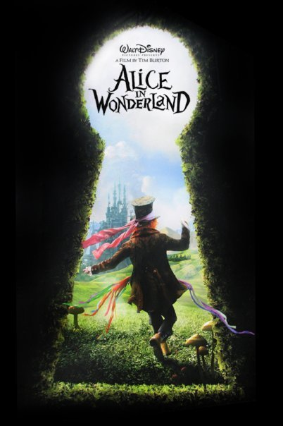

A propos de Tim Burton
Avec un style si distinct que l'adjectif «burtonesque» a été inventé,
Tim Burton a écrit,
réalisé et produit de nombreux films emblématiques englobant des favoris cultes,
des succès au box-office et des adaptations inventives.
On lui attribue le coup de fouet des films de super-héros (Batman, 1989; Batman Returns, 1992),
revigorant l'animation image par image (The Nightmare Before Christmas de Tim Burton, 1993; Corpse Bride, 2005),
et créant certains des antihéros les plus emblématiques du cinéma (Beetlejuice, 1988; Edward Scissorhands, 1990)

Alice aux pays des merveilles
Alice au pays des merveilles (Alice in Wonderland) est un film américain réalisé par Tim Burton et écrit par Linda Woolverton, sorti en 2010.
Après l'adaptation en long métrage d'animation le studio a mandaté Tim Burton pour réaliser une nouvelle adaptation des romans de Lewis Carroll,
intitulés Les Aventures d'Alice au pays des merveilles (1865) et De l'autre côté du miroir (1871).
Auteur : Tim Burton
Lire la suite

Charlie et la Chocolaterie
Charlie et la Chocolaterie (Charlie and the Chocolate Factory) est un film américain réalisé par Tim Burton et sorti en 2005.
C'est une nouvelle adaptation du roman du même nom de Roald Dahl3, publié en 1964.
Auteur : Tim Burton
Lire la suite

Batman
Batman est un film fantastique et de super-héros américano-britannique de Tim Burton, sorti en 1989.
Le film a connu trois suites : Batman : Le Défi (1992), également réalisé par Tim Burton,
Batman Forever (1995) et Batman et Robin (1997), tous deux réalisés par Joel Schumacher.
Il inspira aussi la série d'animation Batman (1992-1995).
Auteur : Tim Burton
Lire la suite